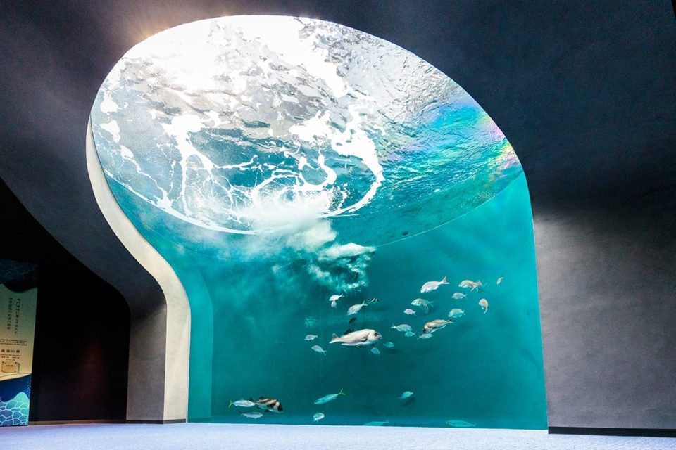

Префектура Кагава · Утадзу · аквариум
Аквариум Сикоку: мощные течения снизу вверх

У подножия моста Сэто-охаси, в посёлке Утадзу, открылся крупнейший на Сикоку аквариум. Его главная фишка: морские пейзажи острова, показанные в движении, от бешеного водоворота до спокойных отмелей.
Зрелище
Стоять под водоворотом
Визитная карточка аквариума: «пейзаж водоворота», сцена, задуманная по образу и подобию пролива Наруто между Сикоку и Хонсю, знаменитого своими вихрями. Стоишь под сводом, и над головой крутится настоящая морская стихия: пенистые гребни, быстрая струя, а сквозь неё неспешно плывут морские обитатели. Такой ракурс, снизу вверх, больше не даст нигде.
В экспозиции собраны морские пейзажи всего острова: от стремнин до тихих бухт, и у каждого своя компания рыб. Пролив Наруто изображает не только водоворот: здесь живут рыбы, любящие сильное течение, и смотрят на них снизу, из туннеля.
Аквариум Сикоку
- Адрес
- префектура Кагава, уезд Аяута, посёлок Утадзу, Хама-итибантё, 4
- Телефон
- +81 877-49-4590
- Часы работы
- 9:00–18:00 (вход до 17:30)
- Цены
- взрослые (старшеклассники и старше, от 16 лет): 2 600 иен; школьники: 1 400 иен; дошкольники (от 3 лет): 700 иен; до 3 лет: бесплатно